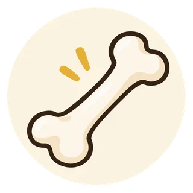

健康習慣と薬 · 第4回
骨粗鬆症：カルシウムを摂れば薬はいらない？
栄養・運動と骨折の予防

確認用ページ｜医療者による公開前の確認待ちです。
まずは、ここから
この記事の3つのポイント

栄養と転倒予防を一緒に
カルシウムだけでなく、食事全体と体の動きも。
骨折の危険も見て考える
骨密度と骨折歴などを合わせ、治療を選びます。

薬とサプリをまとめて確認
薬や注射の中断、サプリの追加は相談してから。
それぞれの役割を、一目で
生活習慣と薬を、組み合わせる
生活習慣でできること
骨と体を支える
必要な栄養と体に合う運動を続け、転倒しにくい環境を整えます。
薬による治療
骨折を防ぐ治療を選ぶ
骨密度や骨折歴などに応じ、骨の作り替えに働く薬を使います。
カルシウムは大切な材料です。必要な薬や注射を自己判断で中断しないようにしましょう。
本文で詳しく読む「骨を丈夫にするなら、牛乳やカルシウムを増やせばよいのでは？」。薬を勧められたとき、そう考えることはありませんか。
カルシウムは、骨の大切な材料です。ただし、カルシウムを補うことだけで、骨粗鬆症の治療を置き換えることはできません。 食事や運動でできることと、薬が必要になる理由を、一緒に考えてみましょう。[1,2]
1．「まずは食事で何とかしたい」と思ったら
食事を見直して骨を守りたいという気持ちは、大切です。薬を続けることや、副作用への不安も、医師や薬剤師に伝えてよいことです。
薬が必要になっても、食事の工夫が無駄になるわけではありません。治療の目的は、骨密度の数字を上げることだけでなく、骨折を防いで、暮らしを守ることです。
2．カルシウムは大切。でも、それだけではない
牛乳・乳製品、豆腐、小魚、小松菜などは、カルシウムを摂るための選択肢になります。食べ慣れたものや、体に合うものを選びましょう。[2]
カルシウムの吸収を助けるビタミンDや、体を支える筋肉のためのたんぱく質なども大切です。一つの栄養素だけを増やすより、必要なエネルギーと栄養を、食事全体で確保することを考えます。[2,3]
詳しく読む：カルシウムは、どれくらい摂る？
2025年版の骨粗鬆症ガイドラインでは、治療のためのカルシウム摂取量として、1日700〜800mgが提案されています。これは摂取量の目安で、サプリメントで追加する量ではありません。 食品や補充から摂る量を合わせて考えます。[1]
ただし、ガイドラインでも、この数値を支える根拠は十分ではないことが説明されています。誰もが同じ量のサプリメントを飲めばよい、という意味ではありません。
腎臓の病気がある人や、カルシウム・ビタミンDに関わる薬を使っている人は、必要量や補い方を医師・薬剤師に確認してください。薬として使う活性型ビタミンD製剤と、食品などに含まれるビタミンDは、自己判断で同じように足し合わせないことが大切です。
3．骨の弱さは、カルシウム不足だけで決まらない
骨は、一度できたらそのままのものではありません。古い骨を壊し、新しい骨を作る「作り替え」を繰り返しています。このバランスが崩れると、骨が弱くなります。[3]
年齢や閉経に伴うホルモンの変化、体格、病気や薬の影響なども関わります。カルシウムを意識して摂っていても、骨粗鬆症になることはあります。 食事の努力が足りない、と決めつける必要はありません。
もう少し詳しく：材料を補うことと、骨の作り替えを整えること
カルシウムなどの栄養は、骨を保つための土台です。一方、骨が壊される働きが強くなっている場合などは、材料を補うだけでは十分でないことがあります。[1,3]
骨粗鬆症の薬には、骨が壊される働きを抑えるもの、骨を作る働きを促すものなどがあります。どの薬が合うかは、骨折の危険や体の状態によって異なります。薬を使う場合も、十分な栄養は必要です。[1]
4．薬が必要かどうかは、「骨折の危険」も見て考える
治療は、骨密度だけでなく、これまでに骨折したことがあるか、年齢、骨に影響する病気や薬なども合わせて考えます。転倒しやすさも、暮らしの中での骨折予防を考える大切な情報です。[1]
特に、軽く転んだ程度で骨折したことがある場合などは、次の骨折を防ぐための治療が重要になります。「カルシウムを増やしたので大丈夫」と自分で判断せず、骨折歴を医師に伝えましょう。
骨粗鬆症は、骨折するまで痛みなどの症状が目立たないこともあります。痛くないことと、骨折しにくいことは同じではありません。[3]
5．運動と転倒予防にも、薬とは別の役割がある
体に合った運動は、骨への刺激に加え、筋力やバランスを保つことに役立ちます。薬を使っている場合も、転びにくい体づくりと環境づくりは大切です。[1,4]
- 床のコードや物を片づけ、つまずきやすい場所を減らす。
- 足元が見えにくい場所の明るさや、履物を見直す。
- 今の体力や骨の状態に合う運動を、医療者と相談する。
骨折したことがある人、背中や腰に痛みがある人は、自己判断で強い負荷をかけないでください。新たな痛みがあるときは、無理に運動で改善しようとせず、医療機関に相談しましょう。
6．サプリメントは「多いほどよい」わけではない
食事で不足する分を、補う方法が役立つ場合はあります。ただし、カルシウムやビタミンDを含む薬・サプリメントを重ねると、摂り過ぎになることがあります。血液中のカルシウムが増え過ぎるなど、健康への影響もあるため注意が必要です。[1,5]
処方薬と、市販のカルシウム・ビタミン剤・健康食品を、まとめて確認しましょう。 パッケージや成分表示の写真があると、薬剤師に相談しやすくなります。
骨粗鬆症の薬を飲んでいる人が、必ずカルシウムを控える必要があるわけでもありません。食事、薬、サプリメントを合わせて、必要なものと量を確認することが大切です。
7．薬や注射を、自分で中断しないで
骨粗鬆症の薬は、種類によって使い方や治療を続ける期間が異なります。医師が休薬を検討する薬もありますが、骨密度が改善したからといって、自分で中止してよいわけではありません。[1]
一部の注射薬では、治療中止後に背骨の骨折が起こりやすくなることが知られています。注射の予定を変更したい、受診を続けにくいという場合も、早めに医療機関へ連絡し、次の治療を相談しましょう。[6]
歯の治療を受けるときは、骨粗鬆症の薬を使っていることを歯科医師にも伝えてください。薬を止めるかどうかを自分で決めず、処方医と歯科医師で確認してもらいましょう。[1]
8．医師・薬剤師に、こんなことを相談できます
- 私は、どんな骨折を防ぐために治療していますか？
- 今の食事で、カルシウムやたんぱく質は足りていますか？
- サプリメントを使っていますが、薬と重複していませんか？
- 薬の使い方や注射の予定を、生活に合わせて相談できますか？
骨密度などの検査結果、これまでの骨折歴、お薬手帳、サプリメントの情報を持って相談しましょう。
薬剤師には、「薬の飲み方が難しい」「通院日を確保しにくい」「乳製品が苦手」といった困りごとも伝えてください。一緒に整理し、医師や管理栄養士などへの相談につなげます。
参考文献・参照先
2026年10月22日確認。一般的な情報です。個別の栄養補充・運動・薬の変更は、医療者と相談してください。
- 骨粗鬆症の予防と治療ガイドライン2025年版（日本骨粗鬆症学会掲載PDF）：栄養・運動、骨折リスク、薬物治療の継続・変更・休薬。
- 骨粗鬆症財団「骨粗鬆症における栄養」：食事全体のバランス、カルシウムとビタミンD。
- 日本整形外科学会「骨粗鬆症（骨粗しょう症）」：骨の作り替え、症状、骨折と予防。
- 厚生労働省 e-ヘルスネット「骨粗鬆症予防のための運動」：骨に刺激を加える運動と予防。
- 日本スポーツ振興センター「サプリメントの危険性」：成分の重複、カルシウム・ビタミンDなどの過剰摂取。
- PMDA「プラリア皮下注60mgシリンジ 再審査報告書」2023年：デノスマブ治療中止後の多発性椎体骨折というリスク。本記事では薬の自己中断を避ける説明に用いています。